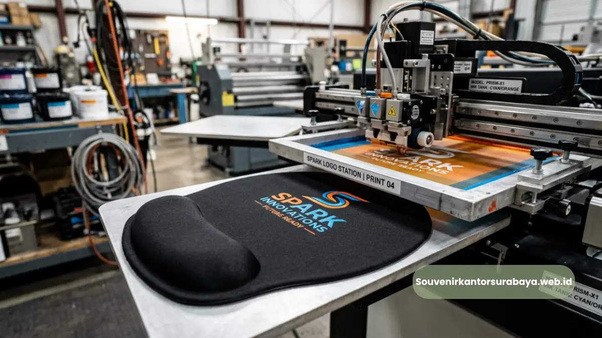
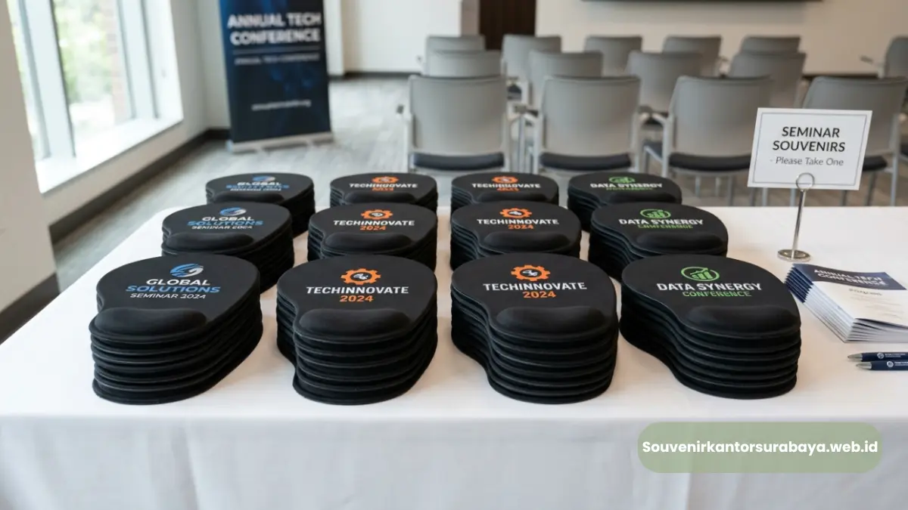

Mouse pad ergonomis custom logo sebagai souvenir seminar bisnis dan gathering korporat fungsional di Surabaya.
- Mengapa Mouse Pad Ergonomis Cocok untuk Souvenir Seminar Bisnis
- Bagaimana Souvenir Fungsional Membedakan Kualitas Sebuah Acara
- Apa Saja Pertimbangan Memilih Souvenir untuk Acara Gathering Korporat
- Bagaimana Mouse Pad Ergonomis Memperkuat Kesan Acara Seminar
- Momen Apa Saja yang Cocok untuk Membagikan Mouse Pad Ergonomis pada Acara Korporat
- Bagaimana Mempersiapkan Souvenir Mouse Pad Ergonomis untuk Acara dalam Jumlah Besar
Mouse pad ergonomis souvenir seminar bisnis di Surabaya adalah pilihan merchandise fungsional yang sering digunakan penyelenggara acara korporat untuk dibagikan kepada peserta seminar, workshop, atau gathering bisnis.
Produk ini dipilih karena manfaatnya dapat dirasakan langsung oleh peserta setelah acara selesai, berbeda dari souvenir seremonial yang cenderung hanya digunakan pada hari acara berlangsung. Pemilihan souvenir yang tepat turut memengaruhi kesan peserta terhadap kualitas dan profesionalisme acara yang diselenggarakan oleh penyedia Souvenir Kantor Surabaya.
- Mouse pad ergonomis memberikan manfaat jangka panjang setelah acara seminar selesai.
- Cocok dibagikan pada seminar bisnis, workshop, dan gathering korporat.
- Souvenir fungsional membantu memperkuat kesan profesional penyelenggara acara.
- Desain custom logo memperkuat identitas perusahaan penyelenggara di mata peserta.
- Souvenir Kantor Surabaya melayani pemesanan dalam jumlah besar untuk kebutuhan acara.
Mengapa Mouse Pad Ergonomis Cocok untuk Souvenir Seminar Bisnis
Mouse pad ergonomis cocok untuk souvenir seminar bisnis karena manfaatnya bersifat jangka panjang dan relevan dengan kebutuhan kerja peserta sehari-hari, sehingga tidak berakhir menjadi barang yang terlupakan setelah acara selesai.
Peserta seminar bisnis pada umumnya adalah profesional yang bekerja di depan komputer secara rutin, sehingga souvenir berupa mouse pad ergonomis memiliki relevansi tinggi dengan aktivitas kerja mereka. Berbeda dengan souvenir seperti gantungan kunci atau notes polos yang sering kali hanya digunakan sesaat, mouse pad ergonomis tetap digunakan peserta setelah kembali ke tempat kerja masing-masing, memperpanjang durasi eksposur logo perusahaan penyelenggara.
Baca Juga
Bagaimana Souvenir Fungsional Membedakan Kualitas Sebuah Acara
Souvenir fungsional membedakan kualitas sebuah acara karena mencerminkan tingkat perhatian penyelenggara terhadap kebutuhan nyata peserta, bukan sekadar formalitas seremonial.
Penyelenggara yang memberikan souvenir bermanfaat cenderung dinilai lebih profesional dan detail dalam mempersiapkan acara, yang pada akhirnya turut membangun reputasi perusahaan penyelenggara di mata peserta dan mitra bisnis.
Apa Saja Pertimbangan Memilih Souvenir untuk Acara Gathering Korporat
Pertimbangan utama dalam memilih souvenir untuk acara gathering korporat meliputi relevansi fungsi souvenir dengan target peserta, ketahanan produk untuk penggunaan jangka panjang, serta kesesuaian anggaran dengan jumlah peserta acara.
Beberapa pertimbangan yang umum digunakan panitia acara korporat:
- Kesesuaian fungsi souvenir dengan profil dan kebutuhan peserta acara.
- Ketahanan bahan produk untuk pemakaian jangka panjang setelah acara selesai.
- Kemudahan proses custom logo sesuai identitas perusahaan penyelenggara.
- Efisiensi anggaran terhadap jumlah peserta yang akan menerima souvenir.
Menurut data umum industri event korporat, souvenir dengan fungsi harian seperti alat kerja atau aksesoris komputer cenderung memiliki tingkat retensi penggunaan yang lebih tinggi dibanding souvenir dekoratif, karena peserta memiliki alasan praktis untuk terus menggunakannya setelah acara berlangsung.

Pilihan souvenir seminar mouse pad ergonomis korporat di Surabaya.
Bagaimana Mouse Pad Ergonomis Memperkuat Kesan Acara Seminar
Mouse pad ergonomis memperkuat kesan acara seminar dengan menghadirkan pengalaman souvenir yang berkesan sekaligus bermanfaat, sehingga peserta mengaitkan pengalaman positif tersebut saat menggunakan produk tersebut di kemudian hari.
Momen Apa Saja yang Cocok untuk Membagikan Mouse Pad Ergonomis pada Acara Korporat
Momen yang cocok untuk membagikan mouse pad ergonomis pada acara korporat meliputi seminar bisnis, workshop internal, pelatihan karyawan, hingga gathering tahunan perusahaan.
Pada acara seminar bisnis, souvenir ini biasanya dibagikan bersamaan dengan seminar kit lain seperti notes dan pulpen, menciptakan paket souvenir yang lengkap dan konsisten secara branding.
Bagaimana Mempersiapkan Souvenir Mouse Pad Ergonomis untuk Acara dalam Jumlah Besar
Mempersiapkan souvenir mouse pad ergonomis untuk acara dalam jumlah besar memerlukan perencanaan waktu produksi yang matang, mengingat proses custom logo dan quality control membutuhkan waktu sebelum produk siap didistribusikan kepada seluruh peserta.
Panitia acara disarankan untuk menentukan jumlah peserta secara pasti di awal, menyiapkan desain logo lebih awal, serta mengonfirmasi jadwal pengiriman agar souvenir sudah tersedia sebelum hari pelaksanaan acara berlangsung. Perencanaan yang matang membantu menghindari keterlambatan yang dapat memengaruhi kelancaran acara.
Jika perusahaan Anda sedang mempersiapkan seminar bisnis atau gathering korporat di Surabaya, tim souvenirkantorsurabaya.web.id siap membantu penyediaan mouse pad ergonomis custom logo dalam jumlah besar sesuai kebutuhan acara Anda.
Mouse pad ergonomis merupakan pilihan souvenir seminar bisnis yang memberikan manfaat fungsional jangka panjang sekaligus memperkuat kesan profesional acara di mata peserta.
Untuk kebutuhan souvenir seminar bisnis atau gathering korporat perusahaan Anda di Surabaya, hubungi souvenirkantorsurabaya.web.id dan pastikan souvenir Anda siap sebelum hari acara.

Hawa Nadira
Tim penulis CorporateGifts ID berfokus pada strategi souvenir kantor, merchandise korporat, dan inovasi brand untuk klien B2B.
Keahlian: Branding perusahaan, produksi souvenir, paket event, desain materi promosi.
Artikel Terkait
Mouse Pad Ergonomis Custom Logo untuk Perusahaan Surabaya
Proses penyesuaian desain custom logo mouse pad ergonomis perusahaan dengan cetak sublimasi, digital printing, dan emboss.
Baca Selengkapnya
Manfaat Mouse Pad Ergonomis untuk Branding Kantor Surabaya
Manfaat mouse pad ergonomis untuk branding kantor terletak pada kombinasi kenyamanan kerja dan eksposur logo harian.
Baca Selengkapnya
Mouse Pad Ergonomis Promosi Bisnis Surabaya
Mouse pad ergonomis promosi bisnis Surabaya dengan wrist rest dan custom logo perusahaan sebagai media branding korporat.
Baca Selengkapnya